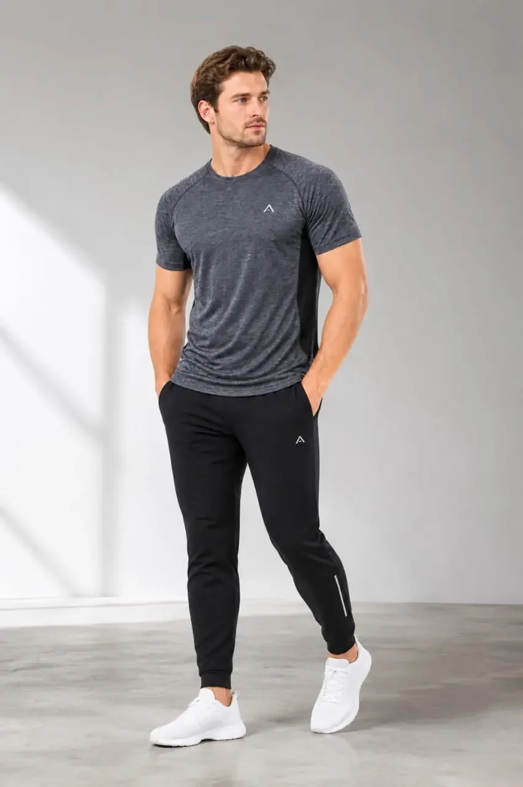

Order handover
Connect the approved sample, specification, colour, artwork, trims, packing and commercial information.
Bulk production follow-up
2D Creation coordinates production milestones and quality observations against the approved product information, helping buyers identify issues, decisions and corrective actions before final handover.

Production coordination
A reliable production plan depends on aligned approvals, available materials, clear responsibilities and realistic timing.
Connect the approved sample, specification, colour, artwork, trims, packing and commercial information.
Track key fabric and trim approvals, availability and dependencies that can affect the production start.
Map cutting, sewing, decoration, finishing, packing and inspection timing around order requirements.
Maintain visibility of status, delays, open approvals and actions that require buyer or factory input.
Communicate deviations clearly, including the affected requirement, evidence, proposed action and decision needed.
Bring together final quality status, packing information and shipment handover requirements.
Quality checkpoints
The inspection plan, method, sampling level and acceptance criteria must be agreed for each order. Website information does not replace a buyer-approved quality protocol.
Confirm approved references, specifications, materials and known risk points.
Observe whether the line is following construction, measurement and workmanship requirements.
Monitor recurring issues, corrective actions and the status of affected production.
Check relevant appearance, pressing, measurement, label and finishing requirements.
Review approved folding, assortment, labelling, carton and documentation inputs.
Record inspection findings and any decision required before shipment release.
Evidence-based follow-up
Reports should help the buyer understand what was checked, what was found, what changed and what remains open.
Related support
Common questions
No. The product, construction, buyer requirements, risk level and applicable testing or inspection protocol determine the appropriate quality plan.
The issue should be documented, assessed for scope and cause, assigned a corrective action and rechecked where appropriate. Any commercial or shipment decision remains subject to agreed buyer authority.
Starting with open approvals creates risk. Any exception should be clearly documented, assessed and authorised by the responsible parties before work proceeds.
Share your product, order stage and buyer requirements so the team can understand the support needed.